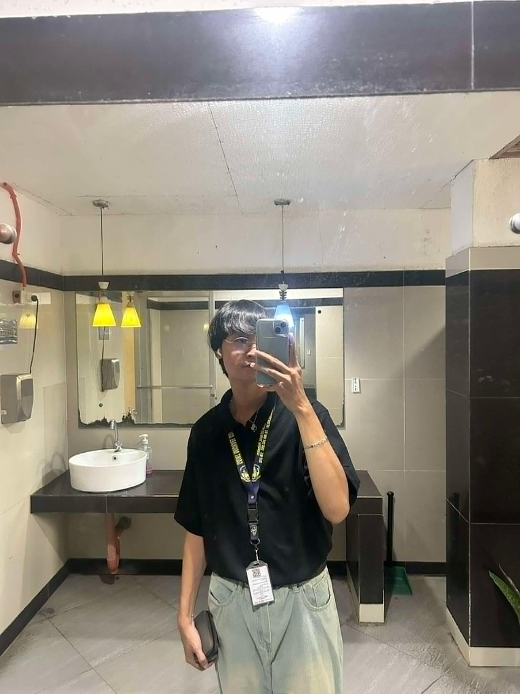
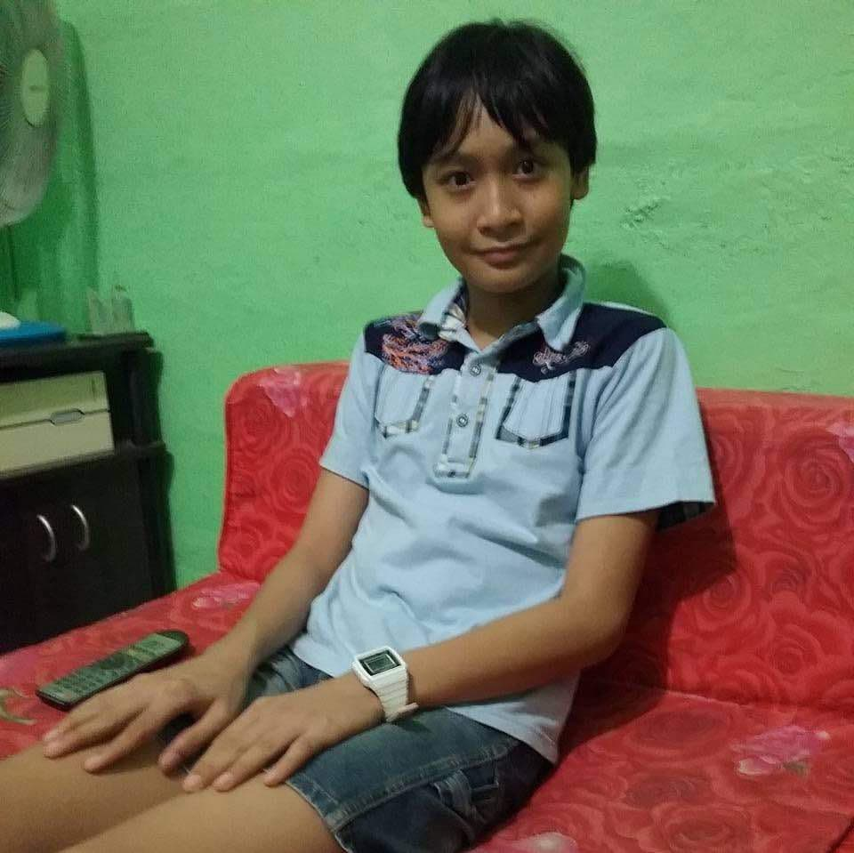
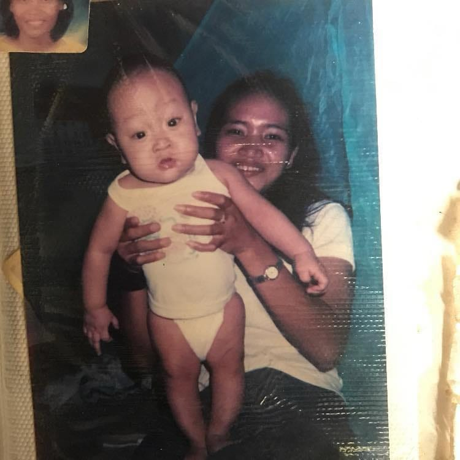
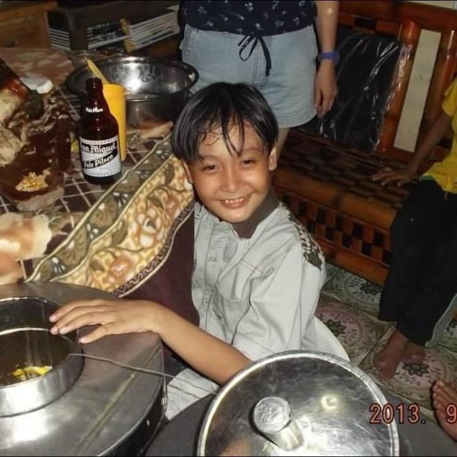
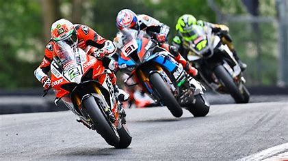
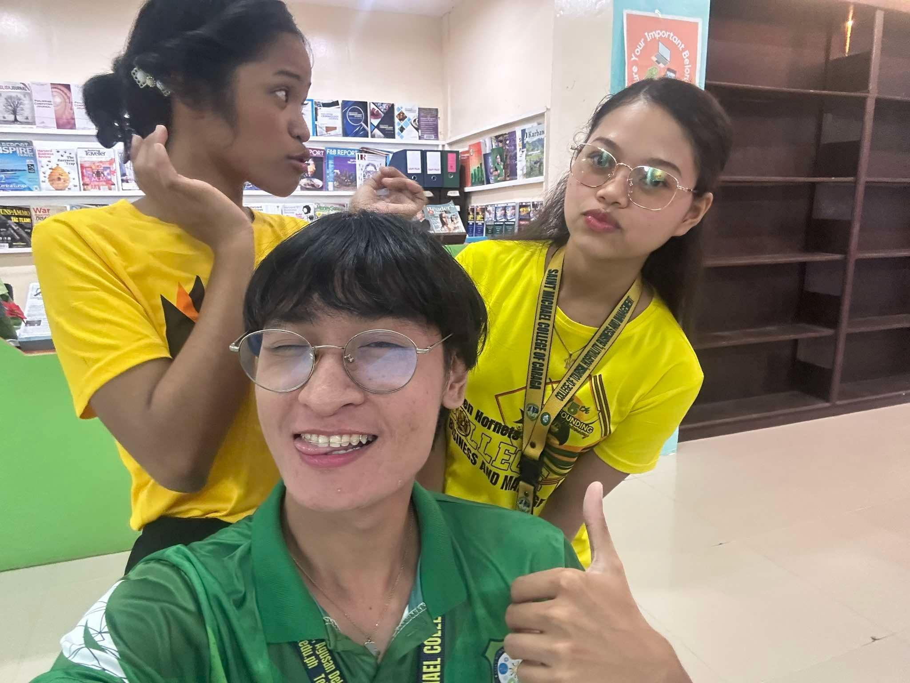

I'm so blessed because my relatives adopted me and my brother to continue our studies. My father couldn’t afford it, so we decided to live in another house to pursue our future.
About Myself



Hello, it's me, JHONMARK for short (JM)
Hello, my name is Jhon mark Sarabia, and I am 19 years old. I live in Nasipit Agusan Del Norte.
This is my life story

(These are important moments in my life).
Growing up, I was considered a shy person. However, those two years became the best of my life. Now, I am in college, working hard to complete my degree and pursue my future goals.
My Hobbies

As a shy person, I enjoy these hobbies that help me express myself and find joy in life. They allow me to relax and grow personally.
The Things That I Like
Eating
I love eating because it gives me the chance to immerse myself in a world of flavors and creativity.
Driving
i love driving it gives me happy when driving the road is physical activity that enhances or maintains fitness and overall health.
Friends? ChildHood Friends

My friends, but not all are true friends.
In college, I've met many people, but I've realized not all of them are true friends. I prefer to keep my distance from fake companionships.